📊 A股、美股、日股都在涨，但逻辑完全不同 | 中日美股市最新对比
China, US, Japan Stock Markets All Rallying — With Totally Different Logic
2026年，全球金融市场进入全新的增长growth[ɡroʊθ] n. 增长周期。上半年，美股、日经屡创新高：日经225凭借盈利改善improvement[ɪmˈpruːvmənt] n. 改善续写新高，美股标普500则依靠“戴维斯双击”稳步上扬。
与此同时，2026年以来，A股市场也整体entire[ɪnˈtaɪə] adj. 整体的表现向好。在同样上涨的情况下，三大股市背后各自的驱动driving[ˈdraɪvɪŋ] adj. 驱动的力量是什么？其增长逻辑logic[ˈlɒdʒɪk] n. 逻辑有何异同？未来走势trend[trend] n. 趋势如何？今天和你分享长江商学院教授欧阳辉、研究学者叶冬艳等发表于财新的署名文章，文章深入对比了中美日股市的驱动逻辑，并揭示reveal[rɪˈviːl] v. 揭示了中美两国股市各自面临的挑战与风险。
作者 | 叶冬艳 单抒文 欧阳辉
原标题 | 估值valuation[ˌvæljuˈeɪʃən] n. 估值修复还是盈利驱动？—中日美股市的比较comparative[kəmˈpærətɪv] adj. 比较的研究
2026年以来，A股市场整体表现向好improving[ɪmˈpruːvɪŋ] adj. 向好的，美国、日本股市更是屡创历史新高。
然而，从一季报数据来看，除创业板外，A股多数主要股指的每股盈利earnings[ˈɜːnɪŋz] n. 盈利（EPS）并未明显增长，部分甚至下滑。
这意味着当前A股的上涨更多依赖于rely[rɪˈlaɪ] v. 依赖估值提升，而非盈利改善。从历史数据来看，标普500指数的上涨则得益于benefit[ˈbenɪfɪt] v. 得益于盈利与估值的双重推动，而日经225指数的上涨主要由盈利驱动。
在股市上涨的背后，风险因素也在积聚accumulate[əˈkjuːmjʊleɪt] v. 积聚。美国面临高估值、低消费者consumer[kənˈsjuːmə] n. 消费者信心、高利率等多重压力；中国则受困于内需疲弱weakness[ˈwiːknɪs] n. 疲弱、企业亏损面扩大等问题，但外贸表现相对稳健。
本文将从A股与美股、日股的盈利估值结构出发，分析analyze[ˈænəlaɪz] v. 分析市场现状，并梳理潜在风险。
股票指数的变动可以拆解decompose[ˌdiːkəmˈpəʊz] v. 拆解为盈利和估值两大核心因素的乘积。
盈利是股市的基本面，反映公司创造利润的能力，通常以每股盈利（EPS）来衡量，其增长主要源于经济扩张expansion[ɪkˈspænʃən] n. 扩张、行业景气度提升、公司竞争力增强、技术进步和管理效率提高等；
而估值则体现市场对未来盈利的定价，常用指标是市盈率（P/E），受情绪、预期和资金成本的影响，估值扩张通常源于利率下降、流动性充裕abundant[əˈbʌndənt] adj. 充裕的、投资者风险偏好提升、对未来增长的乐观预期。
指数上涨要么源于“盈利驱动”或“估值驱动”，要么是“戴维斯双击”（即盈利和估值同时simultaneous[ˌsɪməlˈteɪnɪəs] adj. 同时的上升）。反之，指数下跌decline[dɪˈklaɪn] n. 下跌则对应“盈利/估值杀”或“戴维斯双杀”。
图表1是2015年以来的沪深300指数的累积cumulative[ˈkjuːmjʊlətɪv] adj. 累积的收益率、EPS和P/E变化。
以2015年初为基数baseline[ˈbeɪslaɪn] n. 基数，截至2026年5月26日，沪深300指数累积收益率为48%，EPS增长了49%，而市盈率下降了1%，指数涨幅略低于EPS增长。
沪深300的表现走势可分为两个阶段phase[feɪz] n. 阶段：第一阶段从2015年初至2021年9月中旬，EPS增长64%，指数上涨50%；第二阶段从2021年9月中旬至今，EPS下降decrease[dɪˈkriːs] n. 下降9%、指数下跌1%。
图表1：2015年初至2026年5月26日沪深300指数累积收益率yield[jiːld] n. 收益率、EPS（2015年初=1）与P/E
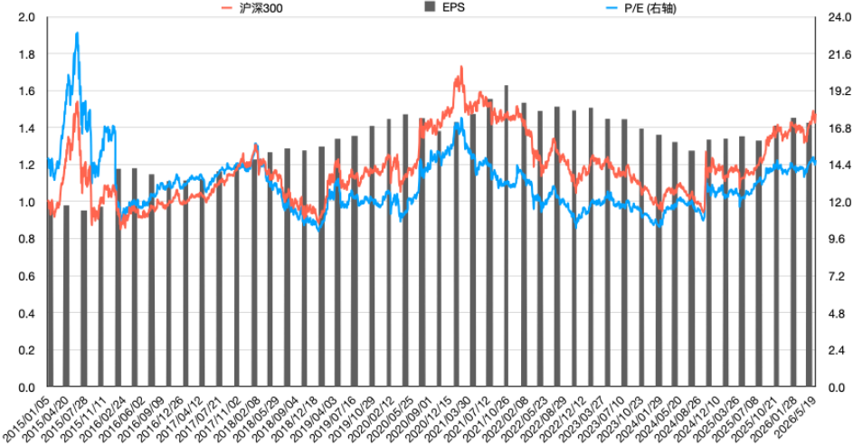
当前沪深300呈现出“旧经济”承压与“新经济”亮点的二元结构structure[ˈstrʌktʃə] n. 结构。近年来，沪深300成分股的整体盈利增长面临confront[kənˈfrʌnt] v. 面临挑战。房地产行业的深度调整，已通过产业链传导transmit[trænzˈmɪt] v. 传导至银行、建材、家电等权重板块，盈利能力持续受压。
图表2是2026年一季度quarter[ˈkwɔːtə] n. 季度沪深300指数一级行业EPS同比增长率。2026年一季度，地产estate[ɪˈsteɪt] n. 地产行业EPS为-0.11元、同比下降30.4%，金融行业也下降2.4%。
图表2：2026年一季度沪深300指数一级行业sector[ˈsektə] n. 行业EPS同比增长率
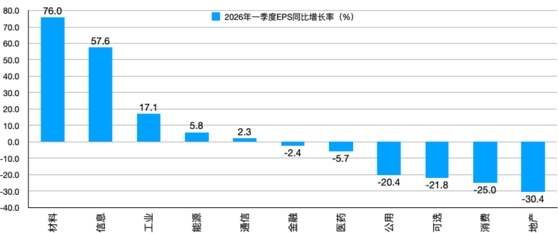
在传统增长动能减弱的同时，盈利增长的动力正逐步向符合国家战略方向的“新经济”领域倾斜shift[ʃɪft] v. 倾斜。
与AI相关的新兴行业，在政策支持和国产替代的浪潮wave[weɪv] n. 浪潮下保持较高的盈利增速。信息行业一季度EPS同比上涨surge[sɜːdʒ] n. 上涨57.6%，工业行业也上涨17.1%。
现阶段的沪深300指数上涨本质essence[ˈesəns] n. 本质上是由低估值与政策预期双重驱动。
► 一方面，在“9.24”行情启动前，无论从市盈率还是市净率来看，沪深300的估值均处于历史底部，并显著significantly[sɪɡˈnɪfɪkəntli] adv. 显著地低于全球其他主要股指。
► 另一方面，当市场触及历史低位时，投资者普遍预期anticipate[ænˈtɪsɪpeɪt] v. 预期政府将出台有力的经济刺激政策、产业扶持计划或资本市场改革措施，如引入长期资金、加强监管等。
因此，沪深300的上涨是一场由估值修复recovery[rɪˈkʌvəri] n. 修复和情绪反转驱动的修复性“预期牛市”。
然而，靠估值修复难以支撑sustain[səˈsteɪn] v. 支撑股市的长期上涨。
行情的可持续性sustainability[səˌsteɪnəˈbɪlɪti] n. 可持续性取决于宏观经济能否企稳回升，以及企业盈利能否真正走出底部，实现“盈利底”与“市场底”的有效共振。
在此之前，市场仍可能面临预期反复、情绪波动以及外部冲击shock[ʃɒk] n. 冲击带来的阶段性风险。
那么，在以沪深300为代表的大型上市公司盈利尚未显著改善的背景context[ˈkɒntekst] n. 背景下，A股其他公司的表现如何？
图表3展示display[dɪˈspleɪ] v. 展示了2015年至2025年万得全A、万得全A（除金融、石油石化）、创业板指和科创50四个指数的一季报每股盈利（指数的每股盈利等于样本股盈利之和除以样本股总股本之和）。
总体overall[ˌəʊvərˈɔːl] adj. 总体的来看，万得全A的一季报每股盈利走势分为两个阶段：
第一阶段为2016年至2022年，从0.14元逐步gradual[ˈɡrædʒuəl] adj. 逐步的上升至0.18元，其中2020年上半年受疫情影响，每股盈利仅0.12元；
第二阶段为2023年至2026年，每股盈利小幅回落并维持在0.17元左右的水平，反映出reflect[rɪˈflekt] v. 反映疫情后经济恢复斜率放缓、企业盈利增长动能减弱的现实。
万得全A（除金融、石油石化）的走势与万得全A基本类似similar[ˈsɪmɪlə] adj. 类似的。
2015年一季度每股盈利为0.08元，2016年至2022年间逐步增长至0.13元，2023年至2026年则维持在maintain[meɪnˈteɪn] v. 维持0.12元左右。
剔除exclude[ɪkˈskluːd] v. 剔除金融和能源类权重板块后，整体盈利水平更低且恢复更慢，说明更广泛的中小企业和制造业企业经营压力更为突出。
图表chart[tʃɑːt] n. 图表3：2015-2026年万得全A、万得全A（除金融、石油石化）、创业板指和科创50一季报每股盈利（元）
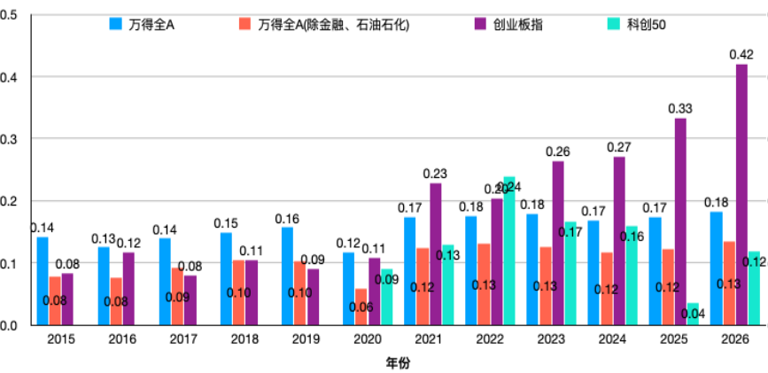
创业板指数在2015年至2020年间表现平淡flat[flæt] adj. 平淡的，一季报每股盈利始终在0.08元至0.11元区间内徘徊。
然而，自2021年起，受益于新能源、生物医药、高端装备等新兴产业的政策支持、技术突破breakthrough[ˈbreɪkθruː] n. 突破和下游需求扩张，创业板出现了结构性突破。
这些行业的龙头企业实现了持续的盈利高增长，从而带动整个板块的盈利中枢上移，一季报每股盈利从2020年的0.11元攀升climb[klaɪm] v. 攀升至2026年的0.42元，成为这一时期表现最为亮眼的板块。
与创业板的稳步上行不同，科创50指数的走势体现出embody[ɪmˈbɒdi] v. 体现较强的阶段性特征。
一季报每股盈利从2020年的0.09元起步，在2021年至2022年间一度上升至0.24元，表明科技企业在上市初期受到市场热烈追捧favor[ˈfeɪvə] n. 追捧。
然而自2023年起，科创50的每股盈利持续continuous[kənˈtɪnjuəs] adj. 持续的回落，至2026年已跌至0.12元。
这种“高开低走”的趋势反映科创企业的盈利模式仍处于探索explore[ɪkˈsplɔː] v. 探索阶段，尚未形成稳定的增长机制。
与创业板拥有较为成熟的新能源和医药产业链相比，科创50所涵盖的半导体、软件、人工智能等领域的盈利兑现realize[ˈrɪəlaɪz] v. 兑现周期更长，抗风险能力相对较弱。
从整个A股市场来看，整体盈利水平在2022年达到近年峰值peak[piːk] n. 峰值，此后基本维持平稳。2021、2022年，创业板与科创50的盈利快速增长，高于市场平均average[ˈævərɪdʒ] adj. 平均的水平。
然而2023年之后，两者走势出现鲜明分化divergence[daɪˈvɜːdʒəns] n. 分化，创业板维持强势，盈利持续攀升，而科创50则盈利能力大幅回落。
进入2026年，日本股市和美国股市均维持强劲robust[rəʊˈbʌst] adj. 强劲的涨势。2026年5月26日，标普500指数达到7,519.12，处于历史新高位置position[pəˈzɪʃən] n. 位置；同日，日经225指数收于64,996.1点，同样处于历史historic[hɪˈstɒrɪk] adj. 有历史意义的高位。
这两大指数均经历undergo[ˌʌndəˈɡəʊ] v. 经历了长达十多年的长牛行情，其上涨动力究竟来自盈利提升、估值扩张，还是二者兼有？
图表4：2015年初至2026年5月18日标普500指数index[ˈɪndeks] n. 指数累积收益率、EPS（2015年初=1）与P/E
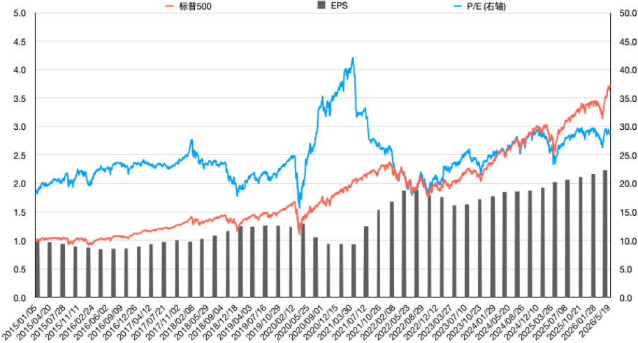
截至2026年5月26日，标普500指数相比2015年初的累积收益率为272%，EPS增长了124%，指数涨幅高于EPS增长，表明indicate[ˈɪndɪkeɪt] v. 表明标普500的上涨大部分来自盈利增长，小部分来自估值提升。
从图表4中可见，截至2020年3月底，标普500指数走势与EPS高度吻合align[əˈlaɪn] v. 吻合，指数的上涨基本由盈利推动。自2020年4月初起，估值开始上升，进一步推动propel[prəˈpel] v. 推动指数上涨。与2015年初相比compare[kəmˈpeə] v. 相比，标普500估值上升66%。
目前，标普500指数的估值处于历史较高水平level[ˈlevəl] n. 水平。其周期调整市盈率（Shiller CAPE）徘徊hover[ˈhɒvə] v. 徘徊在42倍，高于去年水平且明显超过长期均值。
投资者之所以愿意支付如此高的估值溢价premium[ˈpriːmiəm] n. 溢价，本质上是在为“未来的高确定性增长”买单。
市场普遍预期以AI为代表的生产力变革将持续为头部科技公司带来超额盈利增长，大型科技股（如苹果、微软、英伟达、谷歌等）凭借其强大的行业壁垒barrier[ˈbæriə] n. 壁垒和AI布局，成为资金追逐的焦点。
除了盈利预期之外，宏观流动性liquidity[lɪˈkwɪdɪti] n. 流动性环境也驱动了标普500指数的高估值。无风险利率下降的预期降低了高估值股票的贴现率discount[dɪsˈkaʊnt] n. 贴现率，从而支撑其价格水平。
尽管美国长期国债treasury[ˈtreʒəri] n. 国债收益率一度突破5%，但市场对未来利率中枢下移的判断并未根本改变。在此背景下，资金仍愿意为优质资产asset[ˈæset] n. 资产支付溢价。
标普500指数的上涨是一次经典的classic[ˈklæsɪk] adj. 经典的“戴维斯双击”——盈利的快速增长与估值中枢的抬升同时发生。
相较于仅依赖估值扩张的行情，美股这轮上涨具有更扎实solid[ˈsɒlɪd] adj. 扎实的的盈利基本面作为支撑，上涨质量较高。
图表5是日经225指数的累积收益return[rɪˈtɜːn] n. 收益率，每股盈利以及市盈率。
截至2026年5月26日，日经225指数累积收益率为273%，EPS相比2015年初增长了196%，指数上涨大部分majority[məˈdʒɒrɪti] n. 大部分来自盈利增长，估值仅上升26%。
从图表5也可以看出来，截至2020年二季度，日经225指数在大部分时间内与EPS同步synchronize[ˈsɪŋkrənaɪz] v. 同步。
自2020年三季度起，指数的上涨一度快于EPS的上升，但自2021年三季度起至2025年三季度EPS快速上升并追上指数涨幅gain[ɡeɪn] n. 涨幅，此后，指数上涨速度又快于EPS。
图表5：2015年初至2026年5月18日日经Nikkei[ˈnɪkeɪ] n. 日经指数225指数累积收益率、EPS（2015年初=1）与P/E
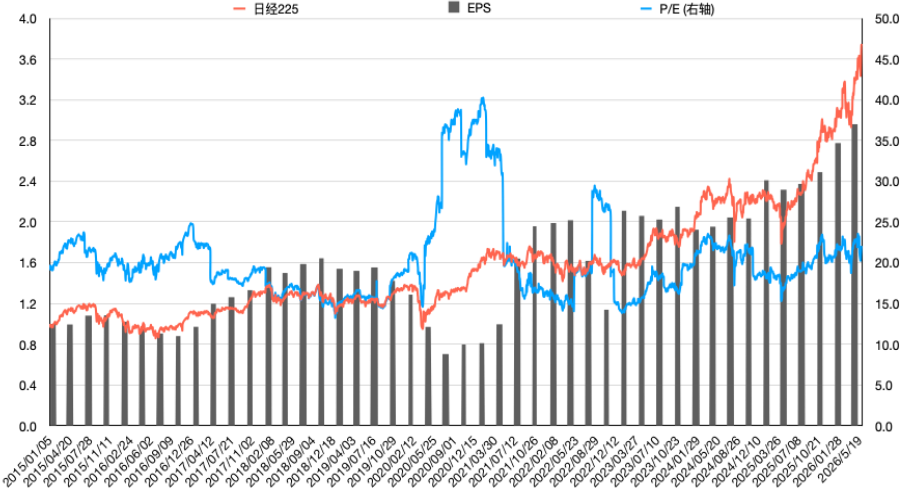
日经225指数创下历史新高，摆脱了“失去的三十年”的阴影shadow[ˈʃædəʊ] n. 阴影。其上涨逻辑与美股不同，主要由摆脱通缩束缚constraint[kənˈstreɪnt] n. 束缚与公司治理改革所释放的盈利增长所驱动。
日本成功摆脱了长达数十年的通缩deflation[dɪˈfleɪʃən] n. 通缩环境，温和通胀使企业能够顺利提价，改善营收和利润空间。
另外，持续疲软的日元汇率也增强了日本出口导向型企业（如汽车制造商、精密仪器、半导体设备等）的全球竞争力competitiveness[kəmˈpetɪtɪvnɪs] n. 竞争力，并大幅提升其海外汇兑收益。
公司治理governance[ˈɡʌvənəns] n. 治理的“价值革命”是本轮日股上涨最核心的驱动力。
东京证券交易所exchange[ɪksˈtʃeɪndʒ] n. 交易所（TSE）自2023年起强力推动上市公司进行市值管理改革，要求市净率（P/B）低于1倍的公司提交改善计划。
这迫使过去长期忽视股东回报的日本企业，开始积极采取行动，包括：增加股息dividend[ˈdɪvɪdend] n. 股息和股票回购，即将账上冗余的现金用于回报股东，直接提升了EPS和股东总回报；
剥离divest[daɪˈvest] v. 剥离非核心资产、改善资本效率，即企业管理层从追求规模转向追求利润率和股本回报率（ROE），显著提升盈利质量。
日经225的上涨以盈利改善为基础foundation[faʊnˈdeɪʃən] n. 基础。这是一场基于宏观macro[ˈmækrəʊ] adj. 宏观的经济复苏和微观公司治理革命的结构性牛市。
其上涨基础比美国更广泛，其风险在于全球经济周期cycle[ˈsaɪkəl] n. 周期对日本出口型经济的影响以及企业改革的持续性。
从标普500和日经225指数的经验experience[ɪkˈspɪəriəns] n. 经验来看，短期内估值上升能推动指数上涨，但指数的长期持续上涨仍需公司盈利同步增长作为支撑。
美国和日本股市经验表明，短期内估值上升确实能推动指数上涨，但长期持续上涨仍需公司盈利增长作为根本fundamental[ˌfʌndəˈmentl] adj. 根本的支撑。
对于A股而言，当前更多依赖估值修复和政策预期的上涨模式，若要走向持续性牛市，必须实现从“估值驱动”向“盈利驱动”的关键转变transition[trænˈzɪʃən] n. 转变。
尽管2026年全球主要股市表现强劲，但在上涨背后，诸多numerous[ˈnjuːmərəs] adj. 诸多的风险因素正在积聚。
图表6是标普500指数Shiller市盈率（周期cyclical[ˈsɪklɪkəl] adj. 周期的调整市盈率）走势。
2026年5月26日，标普500指数的Shiller市盈率达到42.32，处于历史高位，已接近互联网泡沫bubble[ˈbʌbəl] n. 泡沫时期的最高值44.19，较长期均值17.38高出143.5%。
如此高的估值水平意味着imply[ɪmˈplaɪ] v. 意味着市场对未来盈利增长已进入极为乐观的预期。一旦实际盈利增速不及预期，高估值可能面临剧烈回调correction[kəˈrekʃən] n. 回调，引发市场大幅波动。
图表6：标普500指数Shiller市盈率处于历史高位，接近approach[əˈprəʊtʃ] v. 接近互联网泡沫时的最高值44.19
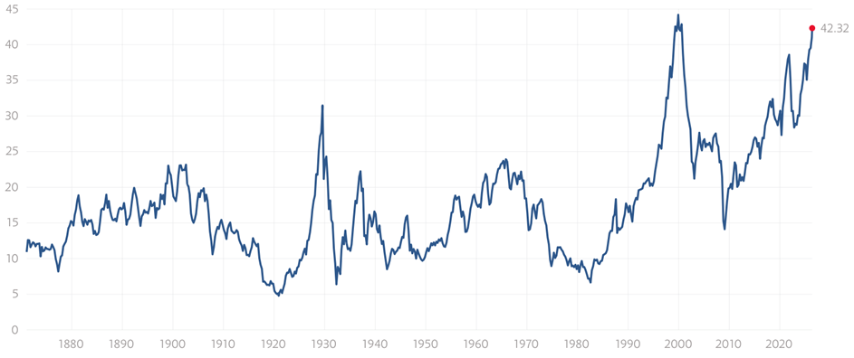
资料来源：multpl.com
图表7是美国密歇根大学消费者信心confidence[ˈkɒnfɪdəns] n. 信心指数。2026年5月，美国密歇根大学消费者信心指数降至44.8，创历史新低，不到2000年3月历史最高点111.3的一半，预示foreshadow[fɔːˈʃædəʊ] v. 预示着美国居民消费动能正在减弱。
消费是美国经济增长的核心驱动力，消费者信心的下降可能拖累hamper[ˈhæmpə] v. 拖累企业营收和盈利增长，进而削弱股市的基本面支撑。
图表7：美国密歇根Michigan[ˈmɪʃɪɡən] n. 密歇根大学消费者信心指数创历史新低
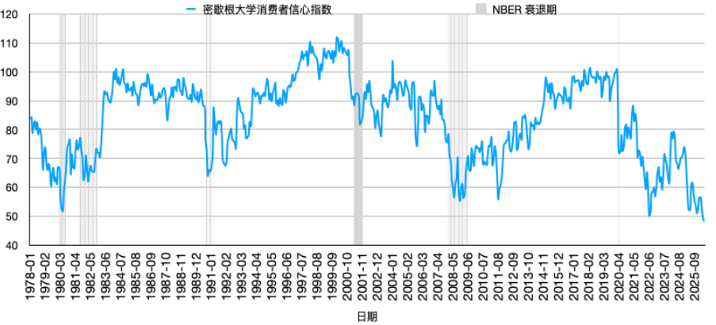
资料来源：https://www.newyorkfed.org；Wind
5月19日，美国30年期国债收益率收于5.18%，为2007年以来的最高水平，已突破5%的关键心理防线，若长端利率进一步上行并有效突破多年阻力位，可能出现单日飙升spike[spaɪk] v. 飙升数个标准差的极端行情，触发大规模去杠杆浪潮，导致收益率在短期内急剧飙升。
对于高估值的市场而言，无风险利率的快速上升将直接压低估值中枢，尤其对依赖远期forward[ˈfɔːwəd] adj. 远期的现金流的成长股冲击最大。图表8是美国30年期tenor[ˈtenə] n. 期限国债收益率。
图表8：美国30年期国债收益率突破5%关键防线threshold[ˈθreʃhəʊld] n. 防线
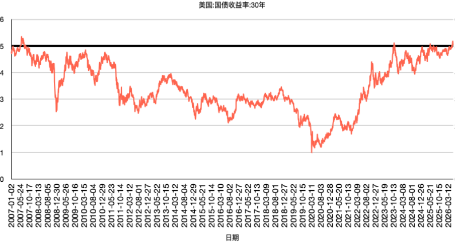
5月26日，美国国内上市公司市值占GDP比重ratio[ˈreɪʃiəʊ] n. 比重（即巴菲特指标）达到236%，远超历史均值。
该指标通常被用来衡量measure[ˈmeʒə] v. 衡量市场整体估值水平，当其显著高于长期均值时，往往意味着市场被高估，未来长期回报率可能下降。
历史上，该指标在互联网泡沫和2007年股市高点时分别取值register[ˈredʒɪstə] v. 记录155%、140%左右，均处于高位，随后市场都经历了大幅调整。图表9是1975年至今美国巴菲特Buffett[ˈbʌfɪt] n. 巴菲特指标。
美国股市当前正面临“高估值、低信心、高利率”的三重压力组合combination[ˌkɒmbɪˈneɪʃən] n. 组合。虽然AI叙事narrative[ˈnærətɪv] n. 叙事和盈利增长仍在支撑市场，但脆弱性已明显上升。任何外部冲击或预期变化，都可能成为引发市场调整的导火索trigger[ˈtrɪɡə] n. 导火索。
图表9：1975年至今美国巴菲特指标indicator[ˈɪndɪkeɪtə] n. 指标
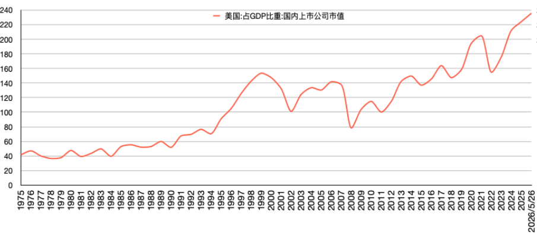
资料来源：Wind，www.macromicro.me
图表10是1991年初至今中国消费者信心、满意、预期与就业employment[ɪmˈplɔɪmənt] n. 就业指数。2026年3月，中国消费者信心、满意satisfaction[ˌsætɪsˈfækʃən] n. 满意指数、预期指数与就业指数分别为90.0、88.4、91.1以及74.4，均处于历史低位。
消费者信心（满意、预期、就业）指数反映消费者对当前经济形势的评价和对经济前景、收入水平、收入预期及消费心理状态的主观感受，是预测经济走势和消费趋向tendency[ˈtendənsi] n. 趋向的重要先行指标。
当前持续低迷的消费者信心反映居民对未来的预期偏弱，直接制约restrict[rɪˈstrɪkt] v. 制约内需的修复，影响消费类企业的营收和盈利增长。
图表10：1991年初至今中国消费者信心、满意、预期expectation[ˌekspekˈteɪʃən] n. 预期与就业指数
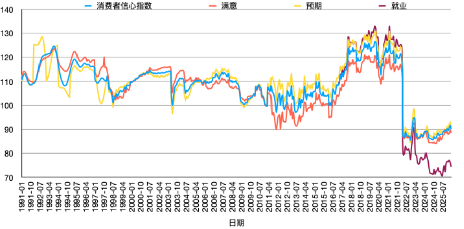
截至2026年3月，中国18.4万家规模以上工业企业处于亏损loss[lɒs] n. 亏损状态，亏损企业家数占比达36%，较2025年末增加了12个百分点，反映企业盈利能力的普遍恶化。
尤其是中下游制造业，面临上游成本居高不下与终端需求疲软的双重挤压，利润空间被严重压缩compress[kəmˈpres] v. 压缩。
这不仅制约股市的盈利驱动，也可能影响企业的投资意愿willingness[ˈwɪlɪŋnɪs] n. 意愿和用工需求，进一步拖累经济复苏。图表11是1998年至今中国规模以上工业industrial[ɪnˈdʌstriəl] adj. 工业的企业亏损情况。
图表11：1998年至今中国规模以上工业企业亏损情况situation[ˌsɪtʃuˈeɪʃən] n. 情况
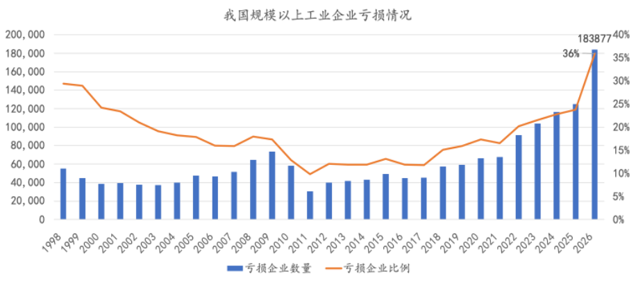
2025年全年，中国货物贸易进出口差额balance[ˈbæləns] n. 差额达11,890亿美元，累计增长19.6%，外贸成为经济的一抹亮色。
进入2026年，1-4月货物贸易trade[treɪd] n. 贸易进出口差额3,477亿美元，累计减少5.2%。尽管外贸顺差surplus[ˈsɜːpləs] n. 顺差仍处于历史较高水平，但同比下降反映外部需求可能降温，或全球供应链格局正在发生变化。
对于依赖外需的部分行业而言，这一潜在风险需要警惕vigilance[ˈvɪdʒɪləns] n. 警惕。图表graph[ɡræf] n. 图表12是2015年至今中国贸易顺差走势。
图表12：中国贸易顺差不断constant[ˈkɒnstənt] adj. 不断的攀升
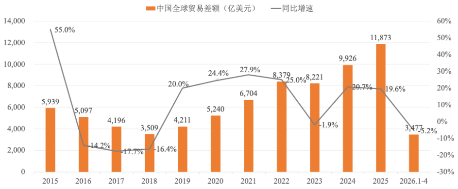
资料来源：中国海关总署，iFinD
2026年A股市场的上涨主要依赖估值修复，而非盈利增长，与标普500的“戴维斯双击”、日经225由盈利驱动的上涨形成鲜明对比contrast[ˈkɒntrɑːst] n. 对比。
从盈利层面aspect[ˈæspekt] n. 层面看，A股整体盈利水平未形成明确的向上趋势。沪深300呈现“旧经济”承压与“新经济”亮点的二元结构，而更广泛的万得全A盈利恢复缓慢，中小企业和制造业企业压力尤为especially[ɪˈspeʃəli] adv. 尤其突出，当前市场的上涨基础尚不牢固。
未来A股要走出持续牛市，关键在于宏观经济能否企稳stabilize[ˈsteɪbɪlaɪz] v. 企稳回升，以及企业盈利能否真正走出底部，实现“盈利底”与“市场底”的有效共振。
在此之前，市场仍可能面临预期反复、情绪sentiment[ˈsentɪmənt] n. 情绪波动及外部冲击带来的阶段性调整风险。
与此同时，中美两国均面临潜在的结构性structural[ˈstrʌktʃərəl] adj. 结构性的风险。美国的高估值、高利率与低消费者信心组合，脆弱性vulnerability[ˌvʌlnərəˈbɪlɪti] n. 脆弱性明显上升；中国的内需疲弱、企业亏损扩大、外贸边际margin[ˈmɑːdʒɪn] n. 边际放缓等信号，也值得警惕。
投资者应更加关注盈利质量与估值安全边际，而非盲目blindly[ˈblaɪndli] adv. 盲目地追涨。
只有在盈利基本面逐步改善的前提下，市场的上涨才具备更坚实的基础与更持久lasting[ˈlæstɪŋ] adj. 持久的的动能。